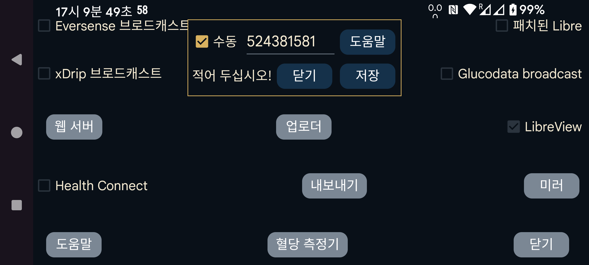

ar be de es fr hi it ja ko nl pl ru tr uk uz zh en
FreeStyle Libre 3 센서를 NFC로 스캔하는 데 필요한 LibreView 계정 ID를 가져오려면, "수동으로"을 지정하면 계정 ID를 직접 입력할 수 있습니다. 또는 “수동”을 끄고 "LibreView에서"를 눌러 계정 이메일 주소와 비밀번호로 LibreView에서 ID를 받을 수 있습니다.
LibreView에서 계정 ID를 받은 뒤 "수동으로" 을 설정하고 LibreView 계정의 이메일 주소와 비밀번호를 변경할 수도 있습니다. 이후 "LibreView로 보내기"를 설정하고 "데이터 다시 보내기"를 누르면 데이터는 다른 LibreView 계정으로 전송되지만 센서를 NFC로 스캔할 때는 이전/수동 입력 계정 ID가 계속 사용됩니다. 이렇게 하면 Juggluco가 Abbott Libre 3 앱에서 사용하는 계정과 다른 LibreView 계정으로 데이터를 보낼 수 있습니다.